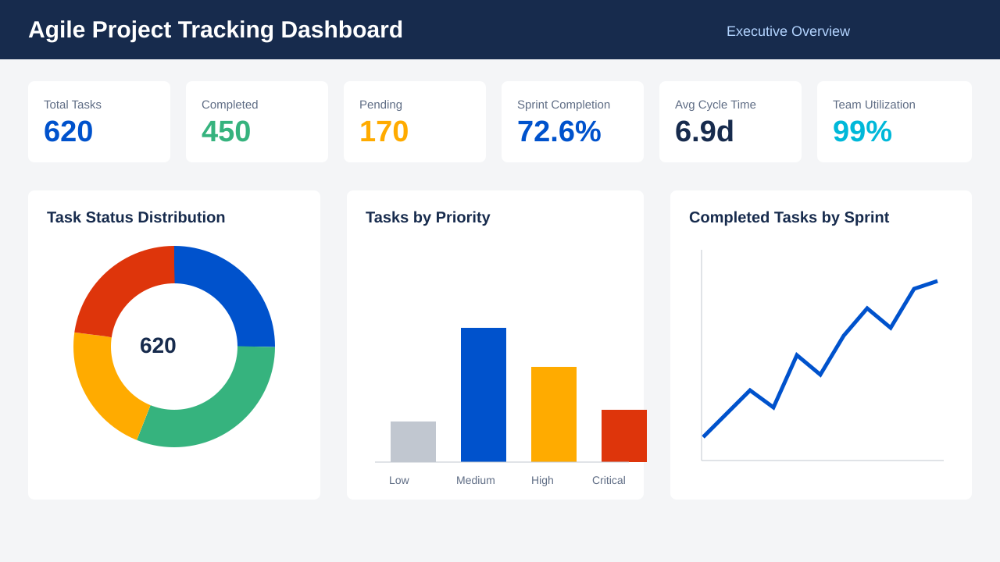

Power BI • Excel • DAX • Python
Agile Project Tracking Dashboard
A Jira-inspired portfolio project for sprint tracking, backlog monitoring, stakeholder reporting, team utilization, and project health analysis.

620
Task Records
72.6%
Completion Rate
4
Dashboard Pages
20+
DAX Measures
Interactive Portfolio View
Dashboard Pages
Scrum and Operations Metrics
KPIs Tracked
The dashboard converts sprint and backlog data into clear delivery signals for project coordinators, Scrum interns, and business analysts.
GitHub-Ready Deliverables
Project Artifacts
Excel Dataset
620 Agile task records with sprint, risk, hour, and status fields
DAX Measure Library
Professional Power BI measures for Agile KPI monitoring
Power BI Build Guide
Page-by-page dashboard instructions and visual recommendations
Project Documentation
Business problem, objectives, insights, and recommendations